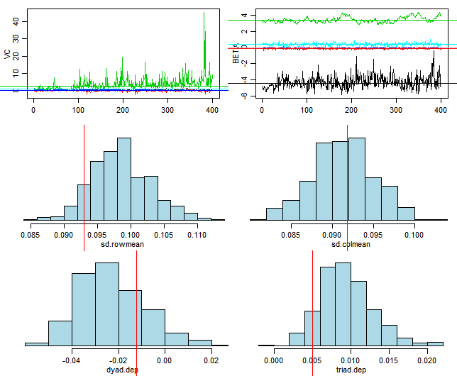
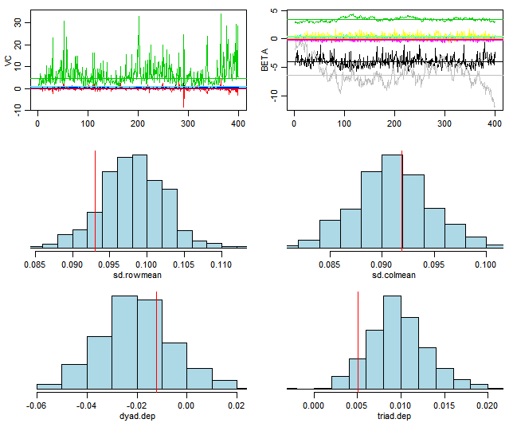
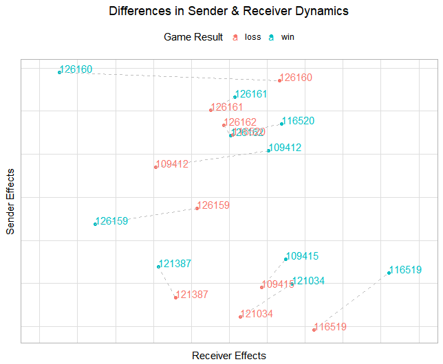
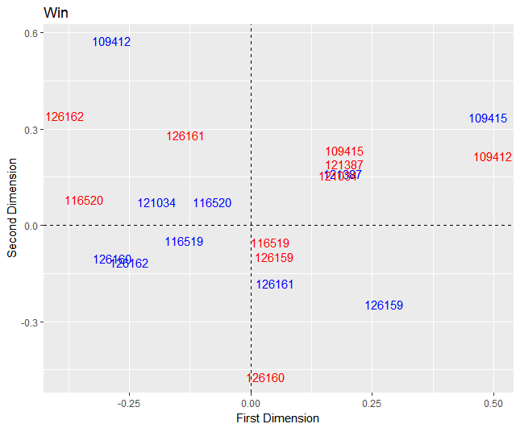

Chapter 7 Network Modeling
7.1 Posession Analysis
Each possession in basketball typically ends in a made or missed shot, turnover, offensive or defensive rebound, or foul. Each possession has network characteristics unique to the play–number of triangles, passing reciprocity, betweenness centrality, etc. Using possession-level network characteristics to predict the outcome of a play can shed light on the utility value of certain team characteristics. If high centrality is a significant predictor of successful shots, then having a superstar player is the better playing style for basketball.
7.2 Multinomial Model
A multinomial logistic regression was initially fit to determine what features were important to predicting the outcome of a possession. Three categories were created for the outcome of a posession: good outcomes (made shot, offensive rebound), bad outcomes (missed shot, turnover), and neutral outcomes (inbound ball). Predictors included network characteristics like number of triangles, passing reciprocity, and betweenness centrality. Below is the formula:
\[y_{outcome,i} \sim \beta_{tri}x_{tri,i} + \beta_{recip}x_{recip,i} + \beta_{betweenness}x_{betweenness,i} + \epsilon_{i}\] for posession \(i\)
7.3 Results
Network characteristics, although informative in summarizing possessions, were not significant predictors of the outcome of a basketball possession. When predicting the full dataset with the model, it correctly predicted the true outcome of a possesion 40.9% of the time. Higher reciprocity and triangle dependence, indicators of collaborative teamwork, had a direct relationship with good outcomes. These results from the preliminary model are largely directional, affirming the notion that network characteristics are not informative enough to capture the game of basketball. While previous papers have used exploratory network analysis to explain playing dynamics or to model the success of a player (e.g. “Basketball Teams as Strategic Networks”), this model shows that there exists limited value in solely relying on network characteristics.
7.4 Additive and Multiplicative Effects Network (AMEN) Analysis
The need to capture the game of basketball more robustly led to the final model, an additive and multiplicative effects network (AMEN) model. The AMEN package implements a latent eigenvalue model through a Monte Carlo Markov Chain. Hoff explains his preference for utilizing a latent eigenvalue model in “Modeling Homophily and Stochastic Equivalence in Symmetric Relational Data.” This model captures the game of basketball more robustly than a multinomial model because it doubly captures network and nodal attributes. The output of this model provides posterior means of the row, column, multiplicative row, and multiplicative column effects for each player. Overall game performance for each player can be used as a response against the output of the latent eigenvalue model in order to check if a player’s network and nodal attributes are significant influencers; points per game for each player was used as a response for a Poisson regression that used the posterior means of the latent eigenvalue model as its features.
\[y_{ij} = \beta_{d}x_{d} + r_{i} + s_{j} + u_{i}^{T}v_{j} + \epsilon_{ij}\] where \[r_{i} = \beta_{i}x_{i} + a_{i}\] and \[s_{j} = \beta_{j}x_{j} + b_{j}\] The model captures the network structure of each pass possession by transforming the passing networks into adjacency matrices. Row and column nodal covariates are px1xn vectors indicating the contribution of each player p for each possession n. The dyadic features are pxpxnxi arrays that capture the shared features between players.
Nodal Attributes (Response in the Poisson Regression): Points per game for each player
Nodal Features (\(\beta_{i}x_{i}, \beta_{j}x_{j}\)): Was in previous player (0/1), currently in possession (0/1)
Dyadic Features (\(\beta_{d}x_{d}\)): Shared position, shared height, shared weight, shared class
Network Attributes (\(y_{ij}\)): Passing network matrix
7.5 Structural Zeros
Currently, the AMEN package takes on a pxp matrix of players to model the passing relationship between players. Currently, the model uses data from the 2014-2015 season, so p = 10. These 10 players represent the five players on the court, and the five players on the bench. For the five players on the court, if there does not exist a pass between two players, then a zero populates the matrix to account for the nonevent. However, if a player is on the bench, he similarly cannot receive a pass, so all bench players will always have a zero populated in the 10x10 matrix. This creates a challenge in modeling the data because the zeros in the matrix represent two different events–players who had the possibility to receive the ball but did not and players who never had the chance to receive the ball.
The model includes a binary column feature that signals a player’s status (on court or on bench). While it does not solve the structural zero problem entirely, this feature accounts for the differences between active and nonactive players.
7.6 Model Fit
The model was fit at two stages: latent eigenvalue model and poisson regression.
7.6.1 AMEN Fit
Checking the model fit of the AMEN output, the posterior predictive checks perform well for the column effects. A challenge with this model, as noted at the end of Fosdick’s and Hoff’s “Testing and Modeling Dependencies Between a Network and Nodal Attributes,” was determining the appropriate dimensionality for transforming the row and column effects onto a latent space. Initially, the data was fit with a dimensionality of 2. However, as there are always five players on the court, higher dimensionality would be more appropriate for this model. The data was fit again with a dimensionality of four, and there was not a significant improvement in the fit of the posterior predictive checks. This suggests that a dimensionality of 2 is enough to capture the data.
The output below shows the model fit of a game with a dimensionality of 2. 
The output below shows the model fit of a game with a dimensionality of 4. 
7.6.2 Poisson Regression Fit
The output of the AMEN model was plugged into a Poisson regression, with the response as a player’s points per that game. Assessing the fit of the Poisson model, it assumes hetereoscedascity, and fits the checks well. However, the p-value for the deviance goodness of fit test was \(9.152 * 10^{-25}\), which indicates with strong evidence that the model fits the data poorly. Assessing the fit of the model with regards to predicting the true points per game, the poisson model had a mean squared error of \(1.53*10^{-23}\). The mean difference between the predicted points per game and true points per game was \(3.91 * 10^{-12}\)–approximately one possession in the context of basketball. Regardless, this model provides a directional indication that row and column effects (passing and receiving) are significant features in predicting the productivity of a player, as denoted by the summary of the model.
Below is the summary output of the Poisson regression’s fit and coefficient estimates for each \(\beta\).
Call:
glm(formula = points ~ ., family = "poisson", data = data.frame(pred.dat[,
-c(1, 3)]))
Deviance Residuals:
Min 1Q Median 3Q Max
-5.9340 -1.9315 -0.3091 1.1841 3.6648
Coefficients:
Estimate Std. Error z value Pr(>|z|)
(Intercept) 2.0536 0.2068 9.929 < 2e-16 ***
apm -2.5614 1.3698 -1.870 0.061490 .
bpm 0.3579 0.1108 3.229 0.001242 **
u1 -5.5429 6.0272 -0.920 0.357761
u2 5.1948 1.3746 3.779 0.000157 ***
v1 0.8560 0.8369 1.023 0.306395
v2 -0.2401 0.5166 -0.465 0.642043
uvpm1 0.3843 3.7931 0.101 0.919292
uvpm2 6.9119 7.2313 0.956 0.339157
uvpm3 3.3323 2.8435 1.172 0.241244
uvpm4 -8.4270 11.7979 -0.714 0.475055
uvpm5 7.5922 7.5001 1.012 0.311403
uvpm6 11.1989 5.8842 1.903 0.057012 .
uvpm7 -1.5104 3.2222 -0.469 0.639261
uvpm8 11.6098 6.2778 1.849 0.064409 .
uvpm9 -3.6840 10.0160 -0.368 0.713017
uvpm10 5.0079 4.3871 1.141 0.253662
---
Signif. codes: 0 '***' 0.001 '**' 0.01 '*' 0.05 '.' 0.1 ' ' 1
(Dispersion parameter for poisson family taken to be 1)
Null deviance: 282.5 on 39 degrees of freedom
Residual deviance: 171.9 on 23 degrees of freedom
AIC: 327.64
Number of Fisher Scoring iterations: 7According to the coefficient estimates, a higher posterior mean for the additive row effect (apm-passing) leads to lower points per game. On the other hand, a higher posterior mean for the additive column effect (bpm-receiving) leads to more points per game. The second dimension of the posterior mean for multiplicative row effects (u2) leads to more points per game. This model summary reaffirms the significance of passing to the success of a team.
7.7 Results
The latent eigenvalue model with less dyadic features (only shared position) performed comparably to the full model based on the posterior predictive checks. The output of the latent eigenvalue model was used to predict a player’s points per game via a Poisson Regression. While both the row and column posterior means were significant influencers of a player’s points per game, row effects had a larger coefficient estimate. These results confirm the importance of passing and teamwork for successful plays.
Exploratory analysis of the model output reveals that there are game-level differences in play style for certain players. Comparing the performance of two games with two different outcomes for the Duke 2014-2015 team, there a noticeable differences in the sender and receiver effects. Player 126160, for instance, had higher receiver effects in a loss compared to a win. This result could imply that player 126160 was not fulfilling his role on the team if his performance recorded by a successful game was his baseline. On the other hand, some players did not drastically change betweeen a a win and a loss. Players like Player 109415 who typically had low playing time and thus lower sender and receiver effects overall, intuitively had even lower sender and receiver effects during a loss. The loss of a team, although influenced by many characteristics, can be partially attributed to these differences in individual player performance. Regardless, almost every player had a higher sender (passing) effect in a win compared to a loss, indicating the importance of passing. However, this model does not take into account sufficient statistics for the varying defense that play against Duke. A future indicator to control for the quality of Duke’s opposing teams would be one way to solve this challenge.
 Looking at the posterior means for the multiplicative row (blue) and column (red) effects for a loss, players who are in the same quadrant and differing colors are more likely to interact. Players that lie on the origin are expected to be the point guard because of their neutrality in passing and receiving the ball from other players. However, the two players who lie on the origin were not the point guards for Duke. Player 126162 (in the red) is a post player, and Player 126159 is a guard. More players lie in the lower right quadrant for a loss compared to a win, especially for the receivers (red).
Looking at the plot of the posterior means of the multiplicative row (blue) and column (red) effects for a win, the players are more evenly distributed. Again, the players closest to the origin were not the point guards for Duke. The players with the most playing time were significantly closer to the origin than the players on the edge of the plot. 